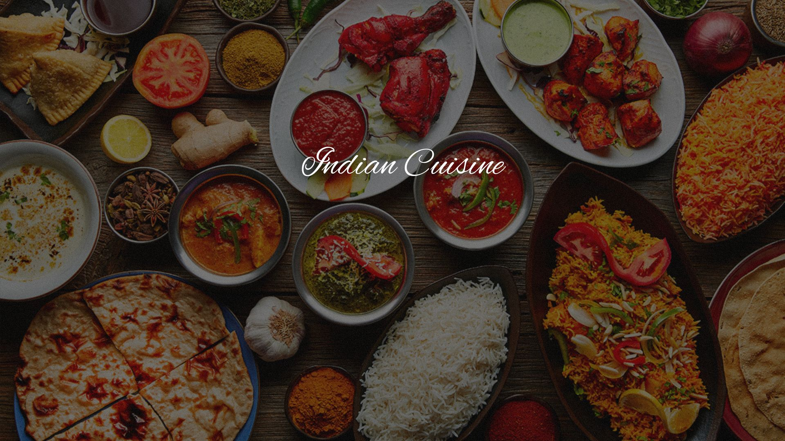
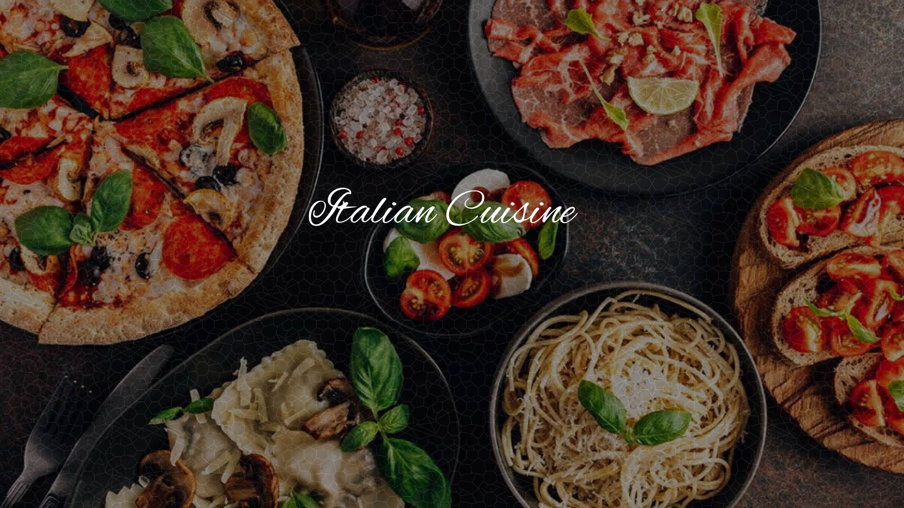
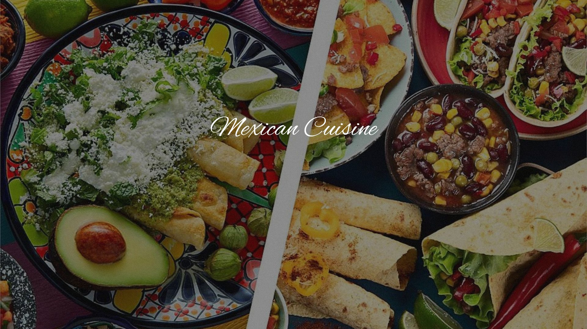
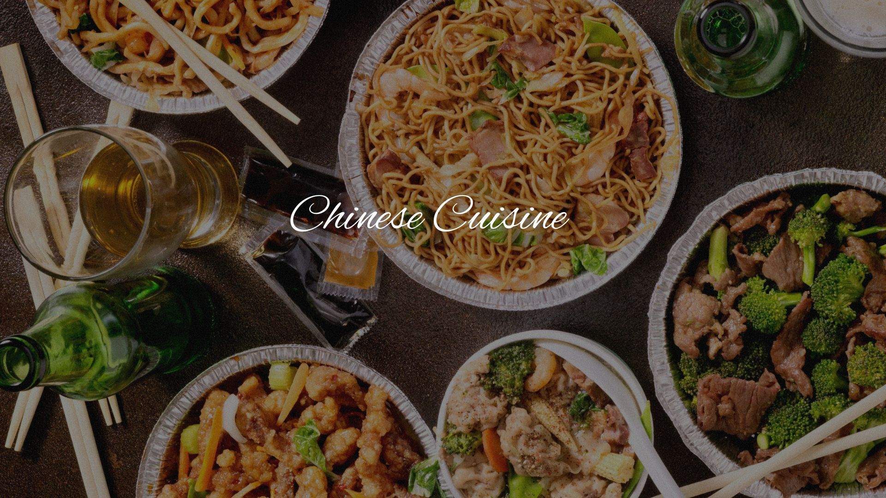

Choose a cuisine

Spicy, rich, flavourful and diverse are terms that are frequently used to describe Indian food. Taj

Italian: One of the main characteristics of Italian cuisine is its simplicity, with many dishes made up of few ingredients, and therefore Italian cooks often rely on the quality of the ingredients, rather than the complexity of preparation. Here are some of our Favorite and high rated Italian restaurants - Mia Cucina

Mexican: Mexican cuisine consists of the cooking cuisines and traditions of the modern country of Mexico. Here are some of our Favorite and high rated Mexican restaurants - Bukhara - ITC Maurya

Chinese cuisine encompasses the numerous cuisines originating from China, as well as overseas cuisines created by the Chinese diaspora. Here are some of our Favorite and high rated chinese restaurants -